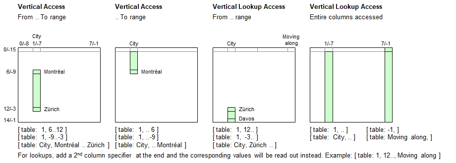

Introduction
Ranges can be specified to select multiple adjacent table rows. Ranges come in four flavors:
| From .. To | From starting row number to ending row number |
| .. To | From 1st data row (row 1) to ending row number |
| From .. | From starting row number to last table row (end of table) |
| .. | From 1st data row (row 1) to last table row (end of table) |
| (blank) | From top row (row 0 / header row) to last table row (end of table) |
In all cases, the data read will be in parameter sets, even if no or only 1 cell has been accessed.
Syntax for Full Table Specification
The table must be referenced inside brackets using a combination of literals and/or numerals and/or parameter sets. These may be constant strings and numbers or expressions providing literals and numerals or parameter sets.
| [ | Table Name | : | Simple Column Specifier | , | Range Column Specifier | ] |
|---|---|---|---|---|---|---|
| Must be a literal | - Matching contents (literal), or | - Starting .. Ending row | ||||
| - Positive row number, or | - .. Ending row | |||||
| - Negative row number | - Starting row .. | |||||
| - .. or (blank) |
Syntax for lookup access (Choose column, followed by the row, and pick up data from a different column):
| [ | Table Name | : | Simple Column Specifier | , | Contents Search Pattern | , | Simple Column Specifier | ] |
|---|---|---|---|---|---|---|---|---|
| Must be a literal | - Header name, or | - Starting .. Ending row | - Header name, or | |||||
| - Positive column number, or | - .. Ending row | - Positive column number, or | ||||||
| - Negative column number | - Starting row .. | - Negative column number | ||||||
| - .. or (blank) |
Lookup access: If a parameter set is encountered in the Simple Column Specifier instead of a simple value (literal or numeral), then the 1st parameter element will be used identifying the row. If it contains no elements, then no lookup can be made and an empty set will be returned.
Principle

Programming examples
table load( table, "Examples\Cities.csv");
echo( [ table: 1, 6..12 ] );
echo( [ table: -7, -9..-3 ] );
echo( [ table: -7, 6..-3 ] );
echo( [ table: City, 6..Zürich ] );
echo( [ table: 1, Montréal..Zürich ] );
echo( [ table: 1, Zürich..Montréal ] ); // Empty set - Zürich is after Montréal
echo;
echo( [ table: 1, .. 6 ] );
echo( [ table: 1, ..-9 ] );
echo( [ table: City, .. Montréal ] );
echo;
echo( [ table: 1, 12.. ] );
echo( [ table: 1, -3.. ] );
echo( [ table: City, Zürich .. ] );
echo;
echo( [ table: 1, .. ] ); // Reads all rows except header row
echo( [ table: City, .. ] ); // "
echo( [ table: -7, ] ); // Note the required final comma. Reads header row, too
echo( [ table: City, ] ); // "
echo( new line, "Some lookup examples:");
echo( [ table: City, .. Montréal, Moving along ] );
echo( [ table: 1, -3.. , Famous attraction ] );Output - Hope to come back next year
{'Montréal','Copenhagen','Venice','Los Angeles','Vienna','Bangkok','Zürich'}
{'Montréal','Copenhagen','Venice','Los Angeles','Vienna','Bangkok','Zürich'}
{'Montréal','Copenhagen','Venice','Los Angeles','Vienna','Bangkok','Zürich'}
{'Montréal','Copenhagen','Venice','Los Angeles','Vienna','Bangkok','Zürich'}
{'Montréal','Copenhagen','Venice','Los Angeles','Vienna','Bangkok','Zürich'}
{}
{'New York City','Washington','Philadelphia','Boston','San Francisco','Montréal'}
{'New York City','Washington','Philadelphia','Boston','San Francisco','Montréal'}
{'New York City','Washington','Philadelphia','Boston','San Francisco','Montréal'}
{'Zürich','Paris','Davos'}
{'Zürich','Paris','Davos'}
{'Zürich','Paris','Davos'}
{'New York City','Washington','Philadelphia','Boston','San Francisco','Montréal','Copenhagen','Venice','Los Angeles','Vienna','Bangkok','Zürich','Paris','Davos'}
{'New York City','Washington','Philadelphia','Boston','San Francisco','Montréal','Copenhagen','Venice','Los Angeles','Vienna','Bangkok','Zürich','Paris','Davos'}
{'City','New York City','Washington','Philadelphia','Boston','San Francisco','Montréal','Copenhagen','Venice','Los Angeles','Vienna','Bangkok','Zürich','Paris','Davos'}
{'City','New York City','Washington','Philadelphia','Boston','San Francisco','Montréal','Copenhagen','Venice','Los Angeles','Vienna','Bangkok','Zürich','Paris','Davos'}
Some lookup examples:
{'Taxi','The Beast','PCC streetcar','Walking','Cable car','Skidoo'}
{'Street Parade','Eiffel Tower','Weissfluhgipfel'}